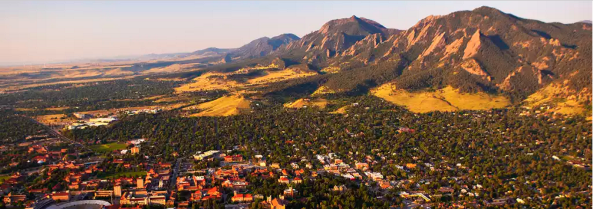

I'm a born and raised Michigander. I grew up here (Grosse Pointe), went to college here (Michigan State University) and been working here ever since (Detroit).
Every city is unique and has a different personality. Most cities I travel to render the same sentiment in my mind "this place is great, but I'll be glad to go home". Boulder CO was different.
I first went to Boulder last year on a cross-country road trip with a friend. We were driving back to Michigan from the Grand Canyon and decided to spend 2 days in Boulder. We hiked in the flat irons and walked Pearl St Mall. For the first time ever I thought about a city outside of Michigan "this place feels like home, I would live here".
Boulder is touted for its 300 days a year of sunshine and having a 10mn walk to the foothills from downtown. Last week it became official, with a full-time offer from Techstars. I'm moving to Boulder. Next week I'll be hitting the road, Boulder bound.
